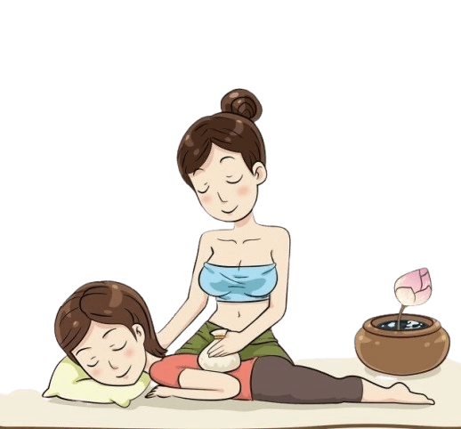

Massage Thaï Traditionnel à Aix-la-Chapelle
Bienvenue dans notre centre de massage au cœur d'Aix-la-Chapelle. Découvrez les techniques authentiques du massage thaïlandais pour votre bien-être et votre détente.
Nos thérapeutes qualifiées, originaires de Thaïlande, vous proposent des massages traditionnels pour soulager les tensions et favoriser la relaxation.

Nos offres de massage
Massage thaï traditionnel
Découvrez la tradition du massage thaï avec des étirements doux et des pressions ciblées pour une relaxation profonde.
En savoir plus →Massage à l'huile
Profitez d'un massage relaxant avec des huiles de qualité pour nourrir votre peau et apaiser les tensions.
En savoir plus →Massage aux herbes
La chaleur bienfaisante et les herbes médicinales s'associent pour une expérience unique de détente.
En savoir plus →